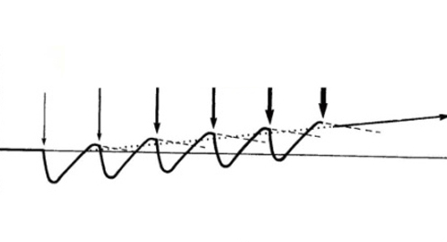

Yesterday we discussed the main aspects that you have to remember when creating your personal training programme after the completion of our 100 Days Workout program. Today we will continue talking about it and explain various training principles and techniques that you can integrate into your programme. We also highlighted 16 most interesting of them!
Main training principles
1. The individuality principle
Each of us has our own ability to adapt to training load. Except for identical twins, different people will adapt differently to the same program. Genetic differences are factor #1 for why some people get big improvements from a given program and others get almost nothing. Any program has to account for the person doing it, so there is no point in taking someone else’s ready-made program from the internet, and even less point in paying for it.
2. The specificity principle
A specific training load causes a specific reaction and adaptation. So the load has to match the athlete’s level and the goals in front of them. This is obvious when you look at different sports (a shot-putter will train very differently from a swimmer or a marathon runner). To improve muscle strength you should not focus on long-distance running, and a distance runner has no reason to spend a lot of time on intense interval work. That is why athletes who train for strength and power, for example weightlifters, often have about the same aerobic endurance as untrained people. By this principle a program should load the physiological systems that play the main role in the result you want.
3. The progressive overload principle
We have said more than once how the body reacts to training. For it, training is stress and an external irritant, so it will do everything to learn to handle that stress as efficiently as possible. That is why you cannot keep doing the same thing. Over time you get used to the load and the return from it drops almost to zero. Remember two key words: ‘overload’ and ‘progressive load.’ They are the base of any kind of training, and every program should include both. For example, to increase muscle strength, the muscles have to be overloaded. That means the load has to exceed the usual one. Progressive strength training means that as muscle strength grows, a proportionally larger resistance is needed to keep stimulating more strength. How do you do that? Raise the intensity of your sessions! You can do it in different ways: shorten rest between sets, add reps, add exercises, make the exercises harder, and so on.
4. The unity of load and recovery principle
Obviously, if you do not train regularly, the body has no reason to change and adapt. You can see that on the illustration below, where fitness gradually returns to the pre-training state. For training to work, you have to understand the link between adaptation, overload and reversibility. Strength and muscle growth come from the right ratio of load and recovery.

When we talk about load level, remember a few things. First, over time the body gets used to the load you give it. If you always do the same thing, fitness will improve at first (to a certain level) and then stay there. Second, too much training load will not let you recover fully, and recovery problems tend to pile up. That happens if the load is always too high or too frequent. A drop in results caused by incomplete adaptation is one of the most obvious signs of overtraining. In that situation you need enough recovery time and you should either stop training or cut the load a lot.
5. The continuity and reversibility principle

This principle means building the process so that the positive effect of sessions is carried forward as much as possible, unjustified breaks are avoided, and the regression of fitness is kept to the minimum. After a workout, during the rest that follows, the body starts to normalize. The next session can then land on a state below the starting one, equal to it, or higher than it (the so-called supercompensation state). Continuity of the process lets you accumulate that state and keep raising the load. Raising the load, through adaptation and hypercompensation, leads to higher fitness. That can be done in different ways, and below we give a list of 16 possible methods.
Main training methods
1. SETs method
To train every muscle or set of muscles to the maximum, you need to make several attempts in each of several exercises to train a certain group of muscles. At the start of the ADVANCED block we explained how to engage different muscles in different exercises and shift the emphasis. You need to do different exercises during the same training to load the muscles to the full.
2. Muscle shock method
Your body adapts to repetitious exercises, therefore you can raise the efficiency if you add the exercises that you have never done before to your programme from time to time. I’m certain that there are plenty of those in the workout. This way your muscles won’t adapt to the loads and you will eliminate your weaknesses.
3. Isolation method
Usually many muscles are engaged during workout which is one of the advantages of this activity. But that does not mean that you can’t find the exercises which utilise your own weight and train isolated sets of muscles. Triceps extensions is an excellent example.
4. Pyramide method
It implies increasing the difficulty with each attempt. It can be done by increasing the number of reps (e.g. 10 reps in the first attempt, 20 in the second, 30 in the third and so on), or by increasing the complexity of the performed exercise (regular push-ups in the first attempt, plyometric push-ups in the second one, push-ups with a clap in the third and so on).
You should be aware of the drawbacks of this method. Muscle fatigue after the first attempt may prevent you from taking high loads that are necessary to stimulate the growth.
The well-known ‘ladder’ is half-pyramid (often ascending), whereas the complete pyramid implies that after the most difficult attempt, you must gradually lower the difficulty with each consecutive attempt to the initial level.
5. Priority method
Implies doing the exercises that train the weakest part of the body at the start of the training, while you are still fresh and at full strength.
6. Intermediary (included) sets method
Implies taking attempts to train ‘problematic’ muscles like abdomen, forearm, shin and other, between the attempts you take to train the chosen set of muscles. You can gather several sets for hard-trained muscles as you train other muscles and thus developing them.
7. Static tension method
Implies imposing static tension on the trained muscles immediately after the exercise. For example, after you do the pull ups to train the biceps, jump down and tense the biceps for a few seconds.
8. Super SETs method
The core idea of this Technique is doing two exercises in a row for antagonistic muscles without any breaks or with a very short break. It increases the intensity of training. For example, pull-ups and push-ups on parallel bars.
9. Combo SETs method
This Technique implies doing two or more exercises for the same set of muscles without or with a very short break.
10. Preliminary fatigue method
Preliminary fatigue means doing an isolated exercise before the basic exercise to train the same set of muscles. Depending on your goals, you can do the exercises employing the Technique of combined sets or in turns during your regular training.
11. Peak contraction method
Peak contraction implies the maximum strain of the working muscle during the maximum (peak) contraction.
12. Short ROM method
Means adding several reps of a lower amplitude at the end of an attempt. E.g. you do usual push-ups on parallel bars, and when you are fatigued and can’t do a full rep, you finish with several reps at a lower amplitude (the upper move or the lower move). It creates additional loads on your muscles.
13. Forced REPs method
It requires the aid of a partner after you exhaust your own stamina and can’t continue doing the exercise. Forced reps is a very hard Technique and you should not abuse it, or instead of muscle growth you will get the opposite result.
14. Negative REPs method
The muscles are made for contraction. Relaxation is a necessary complement to the contraction phase. Therefore, adding the exercises that consist entirely of negative reps will allow you to strain your body with the loads it is not used to!
15. Rest-Pause method
This technique is good if you do hard exercises in which you can do only a few reps per attempt. You make an attempt, then rest for 30 seconds, make another attempt and so on. The main idea is to rest the exact period that is necessary to replenish strength for another attempt comprised of several reps.
16. HIIT method
Traditionally your attempts split into reps, but this technique is different. Intervals means your attempts are split into time periods, i.e. your attempt should last, say, 30 seconds. And you try to do as many reps as possible within that period.